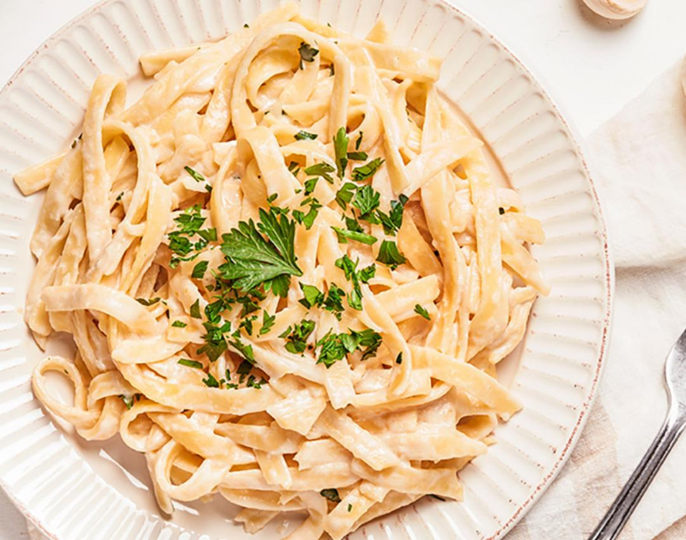

-
Paneer Butter Masala

Paneer Butter Masala is a rich and creamy North Indian curry made with soft paneer cubes simmered in a velvety tomato-based gravy. Infused with aromatic spices, butter, and cream, it offers a perfect blend of tangy, sweet, and mildly spicy flavors. It's a favorite dish, best enjoyed with naan, roti, or steamed rice.
-
Pasta
Pasta is a versatile and comforting Italian dish made from durum wheat flour, shaped into various forms like penne, spaghetti, or fusilli. Tossed in flavorful sauces like marinara, alfredo, or pesto, it can be customized with vegetables, meats, or cheeses to suit any taste. A global favorite for its simplicity and endless variety.